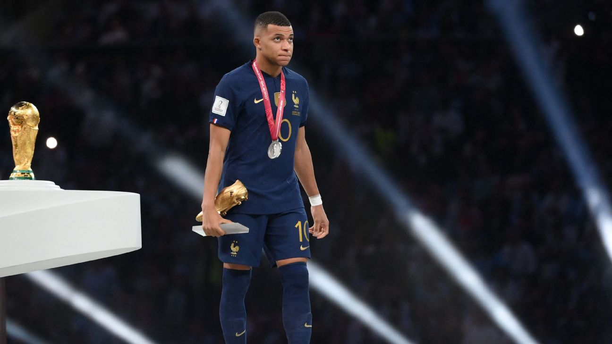

Selamat Datang, web ini akan menampilkan beberapa penghargaan yang didapatkan pada world cup 2022

List Penghargaan
- Juara
- Golden Ball
- Golden Boot
- Golden Glove
- Best Young Player
List Penghargaan
- Juara
- Golden Ball
- Golden Boot
- Golden Glove
- Best Young Player
Argentina Berhasil Menjuarai FIFA World Cup Qatar 2022
Argentina berhasil merebut trofi juara Piala Dunia 2022. Argentina mengalahkan Prancis di final melalui adu penalti 4-2, usai bermain seri 3-3 sampai extra time.
Dengan hasil ini akhirnya momen yang ditunggu-tunggu untuk Messi dapat memenangkan World Cup bersama Argentina akhirnya terwujud dengan penuh perjuangan.
Hasil adu penalti
Prancis
Mbappe - gol
Coman - gagal
Tchouameni - gagal
Kolo Muani - gol
Argentina
Messi - gol
Dybala - gol
Paredes - gol
Montiel - gol
Messi Berhasil Mendapatkan Penghargaan Golden Ball Pada Ajang FIFA World Cup Qatar 2022
Setelah terakhir kali memenangkan golden ball pada ajang FIFA World Cup 2014, Lionel Messi sekali lagi memenangkan penghargaan ini di tahun 2022 yang sekaligus menjadi rekor baru dalam dunia sepak bola. Pesepak bola asal Argentina ini tampil begitu cemerlang sepanjang pertandingan dan mencetak tujuh gol untuk tim nasionalnya. Penutupan yang sungguh hebat dari Lionel Messi, sanggup mengangkat trofi Piala Dunia 2022 dan dinobatkan sebagai pemain pertama yang berhasil menyabet dua kali Golden Ball di tahun 2014 dan 2022.
Kylian Mbappe Mendapatkan Golden Boot Setelah Berhasil Mencetak 8 Gol
Striker timnas Prancis, Kylian Mbappe merebut sepatu emas (Golden Boot) setelah menjadi top skor Piala Dunia 2022 Qatar mengalahkan Lionel Messi. Mbappe dan Messi sebelumnya sama-sama mencetak lima gol menjelang final Piala Dunia 2022 tetapi mereka pada akhirnya mencetak gol yang berbeda pada laga final, Kylian Mbappe mencetak hattrick sementara Messi mencetak brace. Dengan demikian Mbappe mengkoleksi total 8 gol sedangkan Lionel Messi mengumpulkan 7 gol.
Emiliano Martinez Sang Tembok Argentina Jadi Pemenang Golden Glove Di Ajang FIFA World Cup Qatar 2022

Emiliano Martinez atau yang sering dipanggil el dibu dianugerahi Golden Glove berkat tampilan ciamiknya mengawal gawang Argentina selama Piala Dunia 2022. Emi berhasil memenangkan adu penalti 4-2 saat melawan Prancis dan menjuarai Piala Dunia 2022 di Stadion Lusail Qatar. Bukan hanya kehebatannya dalam menjaga gawang, Emi juga handal dalam memainkan mental dari lawannnya hal inilah yang menjadi kehebatannya yang tidak dimiliki penjaga gawang lain.
Enzo Fernandez Mendapatkan Best Young Player Award Di Ajang FIFA World Cup Qatar 2022
Enzo Fernandez resmi meraih FIFA Young Player Award Piala Dunia 2022 lambang supremasi untuk pemain muda terbaik sepanjang turnamen. Piala Dunia 2022 sudah rampung digelar dengan memunculkan Argentina sebagai juara dan hal itu tidak rampung dari peran gelandang muda dari Argentina ini dalam mengatur lini tengah dari Argentina. Enzo Fernandez bermain sangat apik dalam kompetisi ini meskipun dengan umurnya yang masih 21 tahun, dia menjadi salah satu pilihan utama pelatih Argentina dalam ajang ini bahkan dia dipercaya menjadi starter di laga final.